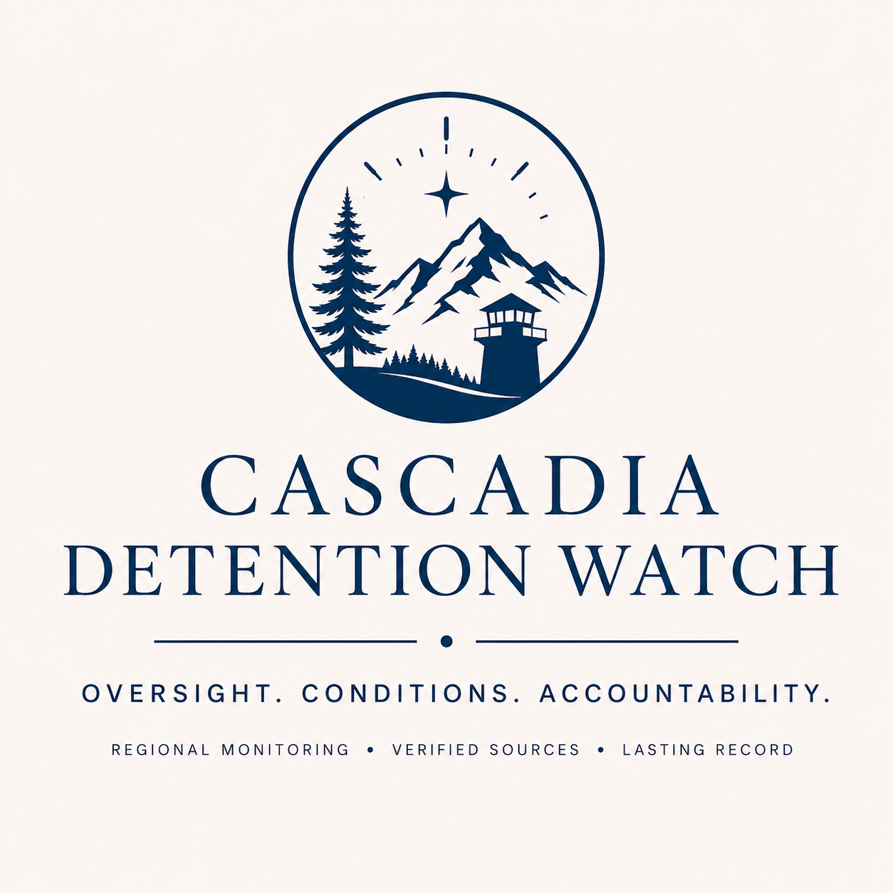

Cascadia Detention Watch
Tracking immigration detention issues connected to Washington, Oregon, and Idaho, starting with the Northwest ICE Processing Center in Tacoma.
This page collects sourced facts, reported concerns, open questions, and ongoing updates in one place.
Latest record date: 2026-05-26
Last checked: May 29, 2026, 7:21 PM UTC
Next review expected: Jun 2, 2026, 12:00 AM UTC
Monitoring status: Weekly monitoring active
Facility focus: Northwest ICE Processing Center / Northwest Detention Center
Source coverage summary: 4 cited sources
Open questions summary: 2 unresolved question(s)